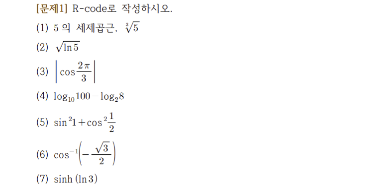

1 Mathematical Operation
1.1 Quiz
- 네이버 지식인 문제 풀이 (링크)

#1
5^(1/3)
#> [1] 1.709976#2
log(5)^(1/2)
#> [1] 1.268636#3
cos(2/3*pi)
#> [1] -0.5#4
log10(100) - log2(8)
#> [1] -1#5
sin(1)^2 + cos(1/2)^2
#> [1] 1.478225#6
1/cos(-(3^(1/2)/2))
#> [1] 1.543545#7
sinh(log(3))
#> [1] 1.333333